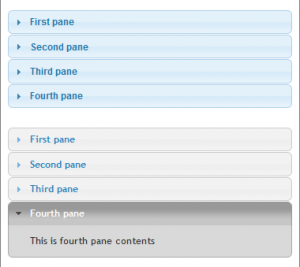

Detailed specifications for all shortcodes
General legend:
*
-- marks default value for the parameter
param="*" -- means this parameter is optional
param="value1|*value2|value3" -- means allowed values for param are value1, value2 or value3. Default: value2
J Buttons
What is so amazing about J Shortcodes buttons (Jbuttons)?
• Jbuttons code does not use any javascript or custom background images.
• Jbuttons cool 3D look is achieved by
using gradients. The gradient of buttons is supported by all browsers
(Internet Explorer, Firefox 3.x, Google Chrome, and Safari).
• Jbuttons size and shape will gracefully
accomodate bigger font size and it will make possible to use multiline
text within buttons.
• Jbuttons “dynamic” look is achieved by using 3 states: normal, hover and active (clicked).
• If browser does not support CSS3 – the regular button will be displayed.
• Note: Internet Explorer is still struggling with support for rounded corners, but all other elements are supported.
[jbutton] shortcode. Full specification:
[jbutton
size="xsmall|small|*medium|large|xlarge|xxlarge" -- button size
color="*white|gray|darkgray|black|orange|red|green|blue|rosy|pink"
rounded="yes|*no" -- Also may use rounded="1" to enable it.
icon="*|yes|no|info|download|question|globe|add|doc|forum|pdf|love|http://link.to/my/icon.png" -- Button icons. URL = custom icon.
link="*#|http://jump.on/click" -- Page to link button to
newpage="yes|*no" -- If 'newpage' is set - new browser page will opens.
a_css="*" -- Customize <a> tag CSS here
span_css="*" -- Customize <span> tag CSS here
]Button Text[/jbutton]
[jbutton color="white" size="xsmall"]Button[/jbutton] ... [jbutton color="white" size="xxlarge"]Button[/jbutton]
[jbutton color="gray" size="xsmall"]Button[/jbutton] ... [jbutton color="gray" size="xxlarge"]Button[/jbutton]
[jbutton color="darkgray" size="xsmall"]Button[/jbutton] ... [jbutton color="darkgray" size="xxlarge"]Button[/jbutton]
[jbutton color="black" size="xsmall"]Button[/jbutton] ... [jbutton color="black" size="xxlarge"]Button[/jbutton]
[jbutton color="orange" size="xsmall"]Button[/jbutton] ... [jbutton color="orange" size="xxlarge"]Button[/jbutton]
[jbutton color="red" size="xsmall"]Button[/jbutton] ... [jbutton color="red" size="xxlarge"]Button[/jbutton]
[jbutton color="rosy" size="xsmall"]Button[/jbutton] ... [jbutton color="rosy" size="xxlarge"]Button[/jbutton]
[jbutton color="pink" size="xsmall"]Button[/jbutton] ... [jbutton color="pink" size="xxlarge"]Button[/jbutton]
[jbutton color="green" size="xsmall"]Button[/jbutton] ... [jbutton color="green" size="xxlarge"]Button[/jbutton]
[jbutton color="blue" size="xsmall"]Button[/jbutton] ... [jbutton color="blue" size="xxlarge"]Button[/jbutton]
Adding standard icons to buttons:
[jbutton icon="yes" size="xsmall"]Yes[/jbutton] ... [jbutton icon="yes" size="xxlarge"]Yes[/jbutton]
[jbutton icon="love" size="xsmall"]Love[/jbutton] ... [jbutton icon="love" size="xxlarge"]Love[/jbutton]
[jbutton icon="yes" size="xlarge"]Yes[/jbutton]
[jbutton icon="no" size="xlarge"]No[/jbutton] [jbutton icon="info" size="xlarge"]Info[/jbutton]
[jbutton icon="download" size="xlarge"]Download[/jbutton] [jbutton icon="question" size="xlarge"]Question[/jbutton]
[jbutton icon="globe" size="xlarge"]Globe[/jbutton] [jbutton icon="add" size="xlarge"]Add[/jbutton]
[jbutton icon="doc" size="xlarge"]Doc[/jbutton] [jbutton icon="forum" size="xlarge"]Forum[/jbutton]
[jbutton icon="pdf" size="xlarge"]Pdf[/jbutton] [jbutton icon="love" size="xlarge"]Love[/jbutton]
Customizing buttons.
To add custom icon to button you need to specify URL of the icon image.
Recommended custom icon sizes (in pixels) for buttons:
xsmall: 10×10, small: 14×14, medium: 16×16, large: 20×20, xlarge: 28×28, xxlarge: 36×36
You may also make button rounded in shape, add multiline text in it and
even customize CSS code of <a> and <span> tags through [jbutton]‘s ‘a_css’ and ‘span_css’ parameters.
[jbutton icon="/_IMAGES/bird-l.png" size="large"]Button with custom icon[/jbutton]
[jbutton icon="/_IMAGES/bird-l.png" size="large" rounded="yes" color="black"]Rounded black button[/jbutton]
[jbutton color="red" rounded="yes" size="large"]Multi Line<br />buttons<br />are ok too![/jbutton]
[jbutton a_css="border:4px solid #0097d1;" color="white" size="large"]Button with custom border[/jbutton]
J Boxes
[jbox] shortcode. Full specification:
[jbox
width="*" -- custom width parameter
color="white|*gray|platinum|red|green|blue|yellow" -- predefined color
icon="*|http://link.to/icon.png" -- custom icon
title="*" -- Title text
border="*1" -- Border thickness in pixels.
radius="*18" -- Border radius in pixels. Default: 18px.
shadow="*2" -- Custom shadow amount in pixels.
jbox_css="*" -- Custom CSS for Jbox.
icon_css="*" -- Custom CSS for Jbox icon.
title_css="*" -- Custom CSS for Jbox title text.
content_css="*" -- Custom CSS for Jbox content.
vgradient="*" -- Custom vertical gradient in CSS colors, ex: "#1d1d1d|#f8f8f8"
] Jbox content text/html [/jbox]
[jbox color="white"]content...[/jbox] [jbox color="gray"]content...[/jbox] [jbox color="platinum"]content...[/jbox]
[jbox color="red"]content...[/jbox] [jbox color="green"]content...[/jbox] [jbox color="blue"]content...[/jbox]
[jbox color="yellow"]content...[/jbox]
This is white jbox without title or icon. This is white jbox without title or icon. This is red jbox without title or icon. This is red jbox without title or icon. | This is gray jbox without title or icon. This is gray jbox without title or icon. This is green jbox without title or icon. This is green jbox without title or icon. | This is platinum jbox without title or icon. This is platinum jbox. This is blue jbox without title or icon. This is blue jbox without title or icon. |
This is full width yellow jbox without title or icon. This is yellow jbox without title or icon. This is yellow jbox without title or icon. This is yellow jbox without title or icon. This is yellow jbox without title or icon. This is yellow jbox without title or icon. This is yellow jbox without title or icon. This is yellow jbox without title or icon. This is yellow jbox without title or icon. This is yellow jbox without title or icon.
[jbox color="yellow" icon="http://www.jshortcodes.com/_IMAGES/bird_60x.png" title="Birds are cute"]content...[/jbox]
[jbox color="green" title="This is only title"]content...[/jbox]
[jbox color="gray" icon="http://www.jshortcodes.com/_IMAGES/apple_60x.png" title="Apples are tasty"]content...[/jbox]
Birds are cute This is yellow jbox with title and icon. This is yellow jbox with title and icon and call to action. | This is only title This is green jbox with title. This is green jbox with title. This is green jbox with title. This is green jbox with title. This is green jbox with title. | Apples are tasty This is gray jbox with title and icon. It also includes [jbutton] shortcode to call for an action! |
[jbox border="6" radius="12" shadow="5" title="This is me" icon="/_IMAGES/gleb_60x.png"]content...[/jbox]
[jbox color="blue" vgradient="#fdfeff|#bae3ff" title="Custom blue gradient"]content...[/jbox]
[jbox vgradient="#d8d8d8|#ffffff" shadow="7" jbox_css="border:4px solid #9d9d9d;" title="Custom gray gradient"]...[/jbox]
This is me I made this jbox to have big border with custom corner radius. It has bigger shadow. | Custom blue gradient This is blue jbox with custom gradient background. This is blue jbox with custom gradient background. | Custom gray gradient This is gray jbox with custom CSS border, bigger shadow and custom gradient background. |
J Columns
Jcolumns shortcode allows you to create your own custom layouts within WordPress posts, pages and even sidebar widgets. You may also use jcolumns to create custom layouts within table cells, divs and other sub-elements. Jcolumns gives your tools to overcome hardcoded layout limitations of your wordpress theme.
[jcolumns] shortcode. Full specification:
[jcolumns
model="*|M,N,P,Q..." -- empty=equal columns. "1,2,3" - 3 columns, single+double+triple widths
halign="*left|center|right" -- Horizontal align of column content
valign="*top|middle|bottom" -- Vertical align of column content
colclass="*" -- Assigns custom class to column <div> element.
colgap="*12" -- Gap between columns in pixels. Minimum=2, default=12
colcss="*" -- Custom CSS for all columns
stripbr="*yes|no" -- Strips one <br> from the edges of column content. Default="yes". See below.
inbordercss="*" -- Custom CSS formatting for inner border
outbordercss="*" -- Custom CSS formatting for outermost left and right borders.
topbordercss="*" -- Custom CSS formatting for topmost border of jcolumns.
bottombordercss="*" -- Custom CSS formatting for bottom border of jcolumns.
]
...column 1 content...
[jcol/]
...column 2 content...
[jcol/]
...column 3 content...
[/jcolumns]
Notes:
• model="1111" = 4 equal columns 25% each; "113" = 3
columns, 20%, 20%, 60%; for equal columns no 'model=' is required.
• '[jcol/]' - column content separator
• stripbr="1" - will strip one <br> from the
beginning and the end of each column's content. It is unsolicitly added
by WordPress. Default is on.
• stripbr="0" - will leave column content as is.
[jcolumns]column 1...[jcol/]column 2...[/jcolumns]
Both
columns are equal. This is column 1. This is column 1. This is column
1. This is column 1. This is column 1. This is column 1. This is column
1. This is column 1. This is column 1. This is column 1. This is column
1. This is column 1. This is column 1. This is column 1. | Both
columns are equal. This is column 2. This is column 2. This is column
2. This is column 2. This is column 2. This is column 2. This is column
2. This is column 2. This is column 2. This is column 2. This is column
2. This is column 2. This is column 2. This is column 2. |
[jcolumns]column 1...[jcol/]column 2...[jcol/]column 3...[/jcolumns]
All
three columns are equal. This is column 1. This is column 1. This is
column 1. This is column 1. This is column 1. This is column 1. This is
column 1. This is column 1. | All
three columns are equal. This is column 2. This is column 2. This is
column 2. This is column 2. This is column 2. This is column 2.This is
column 2. This is column 2. | All
three columns are equal. This is column 3. This is column 3. This is
column 3. This is column 3. This is column 3. This is column 3. This is
column 3. This is column 3. |
[jcolumns]column 1...[jcol/]column 2...[jcol/]column 3...[jcol/]column 4...[/jcolumns]
All
four columns are equal. This is column 1. This is column 1. This is
column 1. This is column 1. This is column 1. This is column 1. This is
column 1. This is column 1. | All
four columns are equal. This is column 2. This is column 2. This is
column 2. This is column 2. This is column 2. This is column 2. This is
column 2. This is column 2. | All
four columns are equal. This is column 3. This is column 3. This is
column 3. This is column 3. This is column 3. This is column 3. This is
column 3. This is column 3. | All
four columns are equal. This is column 4. This is column 4. This is
column 4. This is column 4. This is column 4. This is column 4. This is
column 4. This is column 4. |
[jcolumns]column 1...[jcol/]column 2...[jcol/]column 3...[jcol/]column 4...[jcol/]column 5...[/jcolumns]
All
five columns are equal. This is column 1. This is column 1. This is
column 1. This is column 1. This is column 1. This is column 1. | All
five columns are equal. This is column 2. This is column 2. This is
column 2. This is column 2. This is column 2. This is column 2. | All
five columns are equal. This is column 3. This is column 3. This is
column 3. This is column 3. This is column 3. This is column 3. | All
five columns are equal. This is column 4. This is column 4. This is
column 4. This is column 4. This is column 4. This is column 4. | All
five columns are equal. This is column 5. This is column 5. This is
column 5. This is column 5. This is column 5. This is column 5. |
With Jcolumn shortcode you may create unlimited number of columns.
And if all you want are columns of an equal width – you just need to use column separator [jcol/] and J Shortcodes will automatically calculate proper dimensions for you.
Of course the fun with jcolumns is in it’s ability to create
infinite number of combinations of different columns with different
widths.
[jcolumns model="1,3,1" inbordercss="1px solid #555555"]column 1...[jcol/]column 2...[jcol/]column 3...[/jcolumns]
This is column 1. This is column 1. This is column 1. This is column 1. This is column 1. This is column 1. | This is column 2. It is 3 times wider than column 1 or column 3. This layout was achieved by specifying the parameter: model="1,3,1".This is column 2. This is column 2. This is column 2. This is column 2. This is column 2. This is column 2. This is column 2. This is column 2. This is column 2. This is column 2. | This is column 3. This is column 3. This is column 3. This is column 3. This is column 3. This is column 3. |
[jcolumns model="4,3,2,1" inbordercss="1px dotted gray"] ... [jcol/] ... [jcol/] ... [jcol/] ... [/jcolumns]
This
is column 1. It is 4 times wider than column 4 and 2 times wider than
column 2. This is col 1. This is col 1. This is col 1. This is col 1.
This is col 1. This is col 1. This is col 1. This is col 1. This is col
1. This is col 1. This is col 1. This is col 1. This is col 1.This is
col 1. This is col 1. | This
is column 2. It is 3 times wider than column 4. This is col 2. This is
col 2. This is col 2. This is col 2. This is col 2. This is col 2. This
is col 2. This is col 2. This is col 2. This is col 2. This is col 2.
This is col 2. | This
is col 3. The most narrow one. This is col 3. This is col 3. This is
col 3. This is col 3. This is col 3. This is col 3. This is col 3. | This is col 4. The most narrow one. This is col 4. This is col 4. |
[jcolumns model="93,179,349,175,179" inbordercss="1px solid #e2e2e2" outbordercss="1px solid #999999"]
... [jcol/] ... [jcol/] ... [jcol/] ... [jcol/] ... [/jcolumns]
This is an example of how Jcolumns shortcode can be used to emulate New York Times (nytimes.com) newspaper columns layout, including color of inner and outer borders:
This is col 1 This is col 1. This is col 1. This is col 1 This is col 1. This is col 1. This is col 1. This is col 1. | This is col 2This is col 2. This is col 2.This is col 2.This is col 2. This is col 2. This is col 2. This is col 2. | This is col 3This is col 3. This is col 3. This is col 3. This is col 3. This is col 3. This is col 3. This is col 3. This is col 3. This is col 3. This is col 3. This is col 3. This is col 3. This is col 3.This is col 3. This is col 3This is col 3. This is col 3. This is col 3. This is col 3. | This is col 4. This is col 4. This is col 4. This is col 4. This is col 4This is col 4. This is col 4. This is col 4. This is col 4. This is col 4. This is col 4. This is col 4. This is col 4. | This is col 5This is col 5. This is col 5. This is col 5.This is col 5This is col 5. This is col 5. This is col 5. |
J Tabs
Jtabs shortcode offers support for Jquery UI Tabs. Jquery tabs are beautiful way to organize content within limited space but are hard to implement without raw HTML + javascript coding. Jtabs makes this process easy and adds support for 5 themes x 5 sizes, which translates to 25 different look and feel variations.
[jtabs] shortcode. Full specification:
[jtabs
size="*normal|small|xsmall|xxsmall|xxxsmall"
theme="blitzer|cupertino|overcast|*smoothness|vader"
width="*" -- custom width, in pixels
]
Tab 1 title :: Tab 1 content ...
[jtab/]
Tab 2 title :: Tab 2 content ...
[jtab/]
Tab 3 title :: Tab 3 content ...
[/jtabs]
Notes:
• Extra settings for [jtabs] is available in J-Shortcodes admin panel
• '::' - double colon is a separator between tab title and tab content.
• '[jtab/]' - separator between tabs
[jtabs theme="smoothness" size="xxsmall"]Tab 1 :: ...[jtab/]Tab 2 :: ...[jtab/]Tab 3 :: ...[jtab/]Tab 4 :: ...[/jtabs]
[jtabs theme="blitzer" size="xxsmall"]Tab 1 :: ...[jtab/]Tab 2 :: ...[jtab/]Tab 3 :: ...[jtab/]Tab 4 :: ...[/jtabs]
[jtabs theme="cupertino" size="xxsmall"]Tab 1 :: ...[jtab/]Tab 2 :: ...[jtab/]Tab 3 :: ...[jtab/]Tab 4 :: ...[/jtabs]
[jtabs theme="overcast" size="xxsmall"]Tab 1 :: ...[jtab/]Tab 2 :: ...[jtab/]Tab 3 :: ...[jtab/]Tab 4 :: ...[/jtabs]
[jtabs theme="vader" size="xxsmall"]Tab 1 :: ...[jtab/]Tab 2 :: ...[jtab/]Tab 3 :: ...[jtab/]Tab 4 :: ...[/jtabs]
J Accordion
J-shortcodes offers support for Jquery UI Accordion.
Jquery accordion is yet another very useful addition to any website
allowing to present plentiful content nicely organized within accordion
containers.
More description will be added soon…

[jaccordion] shortcode. See this blog post for [jaccordion] shortcode description.
J Gallery
Jgallery shortcode allows building flexible and customizable image
galleries and slideshows on pages of your wordpress website. You may
even use
shortcode to build gallery of your recent posts, or even selective posts from certain categories.
Note: [jgallery] shortcode is still under development – see this forum post for introduction, samples and brief instructions to play with.
Jgallery shortcode: Demo 1
Jgallery shortcode: Demo 2
Jgallery shortcode: Demo 3
Jgallery shortcode: Demo 4
Jgallery shortcode: Demo 5